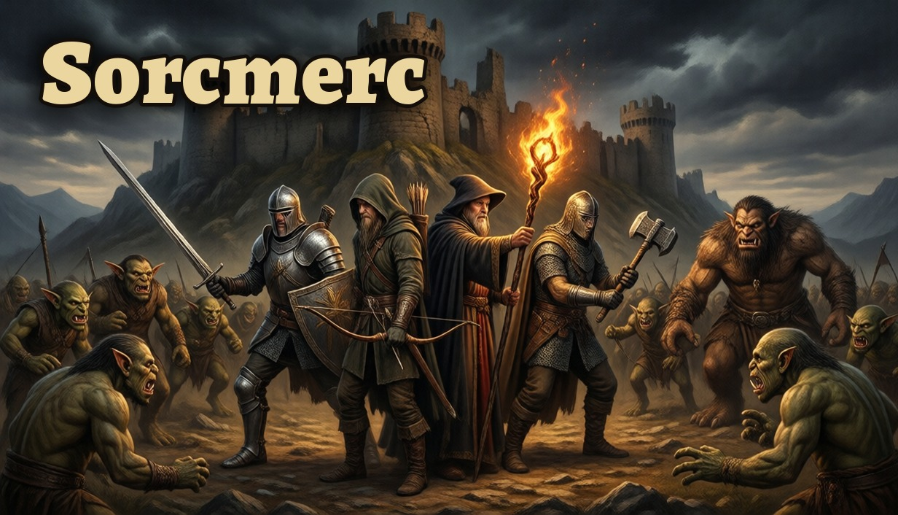
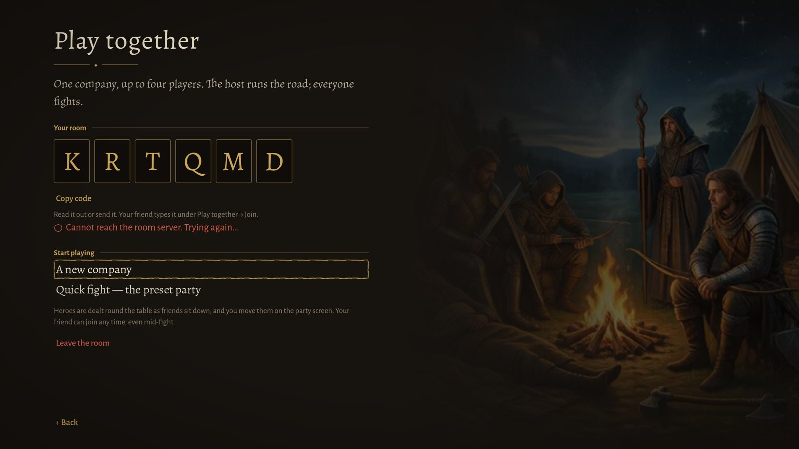
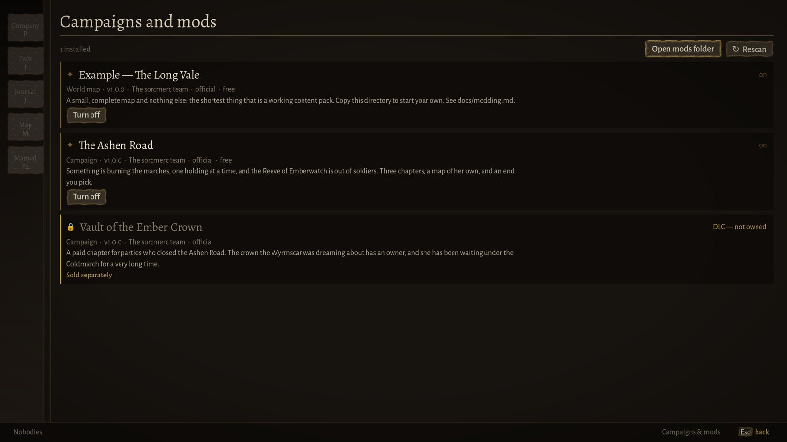
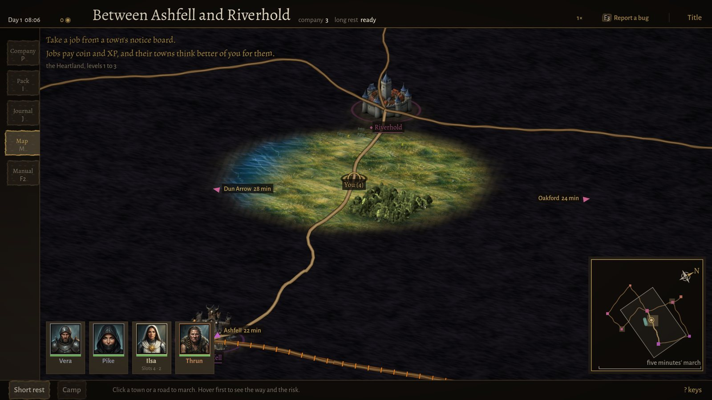
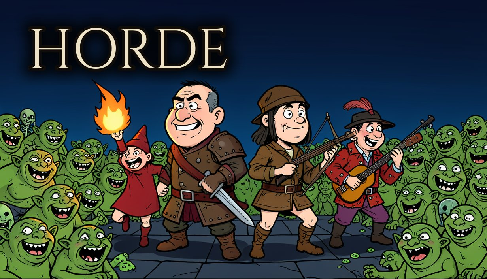
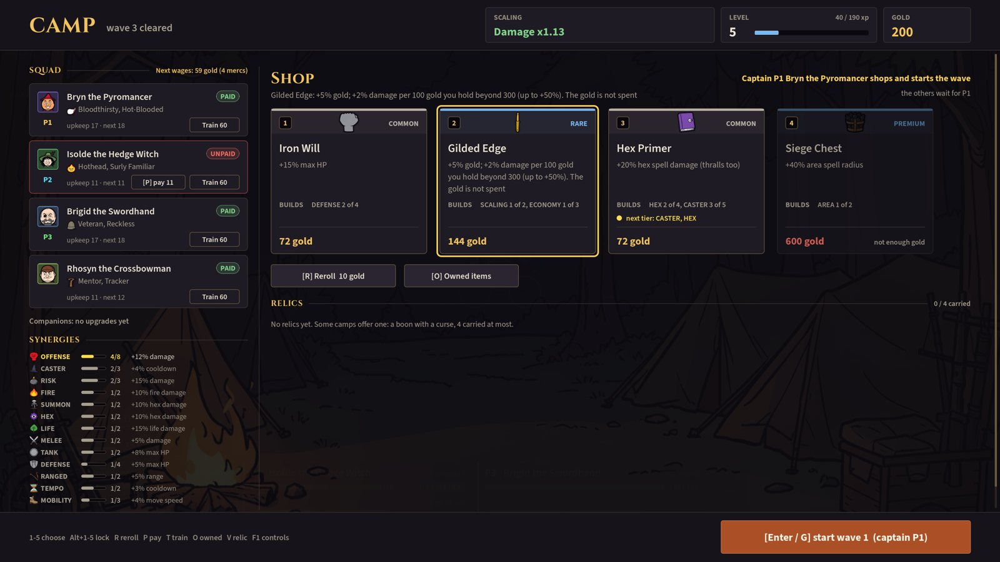
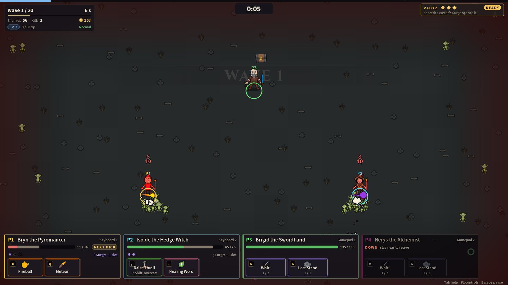
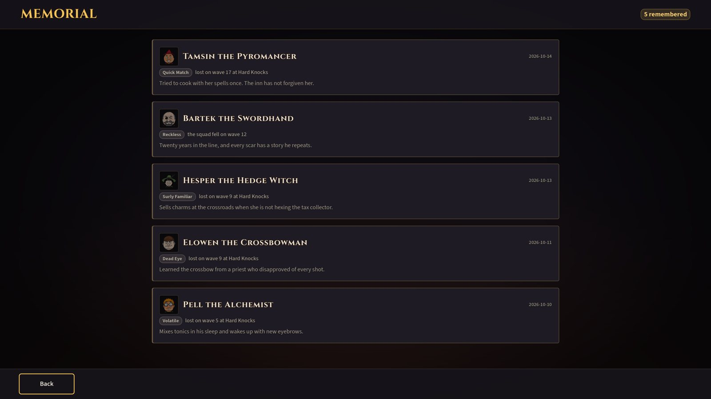
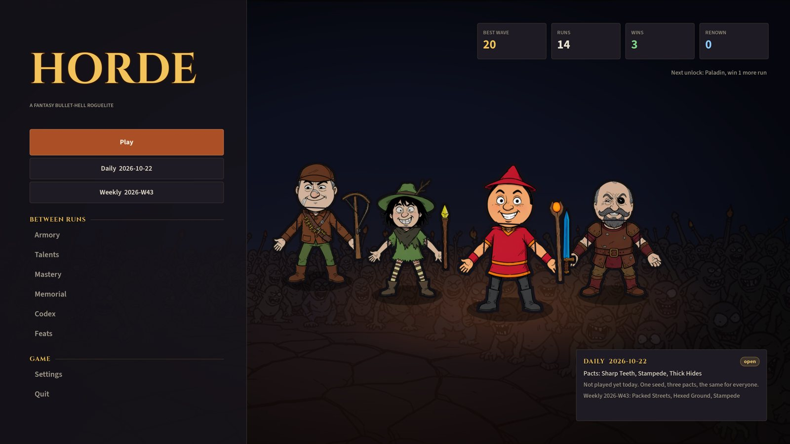

Lorebound
Fantasy games about hired swords, borrowed magic, and the bill that comes due.

SorcMerc
Found a mercenary company, hire its blades at roadside inns, and take work from town notice boards. Every fight is turn by turn on a hex board, and every spell you cast stays spent until you can afford a proper night's rest.
What sets it apart
-

The Sunken Shrine. The cleric's card counts the slots she has left. Magic you have to rationSpell slots come back only on a long rest, and a long rest costs eight hours of world time, an inn fee or a camp with a chance of ambush. Most 5e games hand slots back after every fight.
-

The muster roll. Each sheet tracks traits, relations and a fight record. Mercs who rememberYour company earns scars, banes and veteran traits. They form opinions of each other: friends cover each other in a fight, rivals get in the way.
-

Riverhold at the crossroads. The map turns and tilts. An open world of roadsMarch between towns on a living clock. Four countries get harder the farther you go from home, factions go to war, and towns remember how you treated them.
-

The Open Downs: assassins and bandits on the road. Full 5e rules on hexes2024 character creation and the real action economy, played on a hex grid. Surprise, cover and the ground you stand on all count.
-

Play together: one room code, one company. Online co-op for up to fourShare a room code and run one company together. The host leads the march, and everyone fights.
-

Campaigns and mods, side by side. Built to be moddedCampaigns, monsters and items are plain data packs. The bundled content uses the same tools players get.


More from the road



Every screenshot opens at full 3840 × 2160.

Horde
Twenty waves, mini-bosses at waves 7, 12 and 16, a boss at 20, and then a final swarm that never stops. You lead a small warband through it, hire and pay companions at camp between waves, and build a squad that can stand in a sea of up to fifteen hundred monsters. Horde is a working title.
What sets it apart
-

Wave 12. The companions' panel sits bottom left, one key each. A warband, not a lone heroMost survivor-likes give you one character. Here you fight beside companions with their own auras and skills, and you can order them around mid-wave.
-

Camp: Isolde the Hedge Witch is unpaid. Wages, deserters and rivalsCompanions expect pay at every camp. Skip it and they leave, then come back later as rival mercs you have to beat.
-

The Bloodied Chalice: more crit, less health. Every relic has a catchRelics carry a boon and a curse together, and you carry only four. Swapping one out is a real decision.
-

Four players, keyboards and gamepads mixed. Couch co-op for up to fourTwo to four players on one screen, each playing a hero. Any empty seat is filled by an AI companion.
-

The memorial keeps every named merc you lost. Mercs who level upTrain a class at camp and its basic attack evolves at level three. Named mercs earn quirks and scars, and the fallen go on a memorial.
-

The title screen, with the daily and weekly runs. A weekly challengeEach week brings one fixed squad and set of rules for everyone, and any run can be shared by its seed.


More from the field


Every screenshot opens at full 3840 × 2160.
The studio
Lorebound Games makes fantasy games about mercenary companies: the people you hire, what they cost you, and who comes home.
Both games are built in Godot. They are still in development, so the screenshots on this page come from current builds and will change before release.
Press, publishers and players: write to hello@loreboundgames.win.